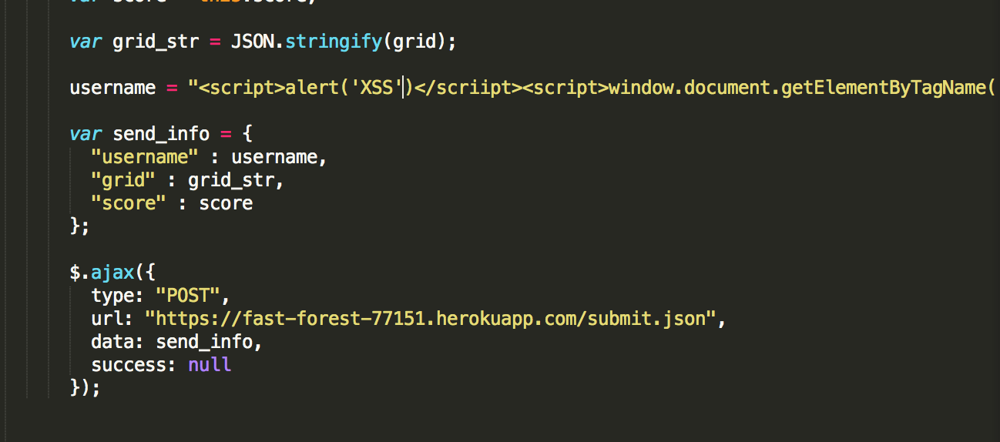
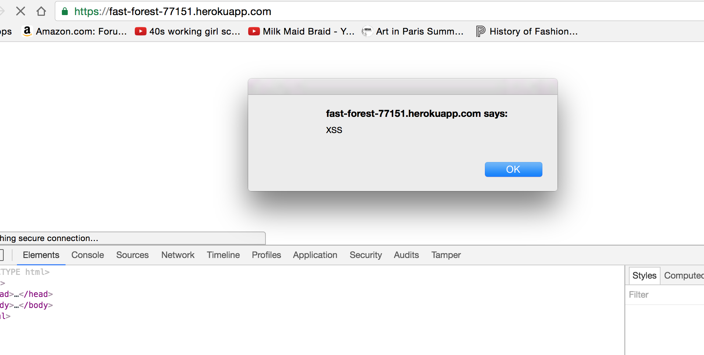

My partner’s product is a web application that can manage three kinds of requests. It can manage the post request send by the game and save the corresponding scores into its database. I can also manage the two get requests can either find the score of a specific user or display all the score reports. My job is to find the vulnerability in this web application in terms of its ability to manage the requests. I will conduct attacks to test the security of the web application and its corresponding database. My task is to expose all the problems and make sure that the web application can be used safely by others. Here's the url of my partners web application: https://fast-forest-77151.herokuapp.com/
I will first conduct the “black box” testing for the post request. I will conduct XSS attack and insert insecure data using the post request and see if there’s any vulnerability in the communication between web server and database. I will also conduct the test using [$ne], the operation in Mongodb to test if the web application manages this database vulnerability. Then I will check the code and see if there’s any other security vulnerability that is easy to be attacked. I will show how to do a ddos attack on the web application if the code fails to manage such situation
The major vulnerability of this web application is on its databse and its lack of security configuration.
It does not validate the input and output of the POST and GET request, which means one can easily insert a malicious Javascript as a part of the data into the database. This malicious Javascript will be executed automatically once it is saved in the database.
Also, the use of MongoDB as a NoSQL database has its own vulnerability since it is designed for open access. It has the problem with [$ne] operation if we don’t check the request send by the client. If we add the [$ne], which means “not equal to” in the request command to request a specific data, then the database will expose all the data in the database. This is extremely dangerous if there’s any sensitive data saved in the database.
Since the web application does not do any security configuration, everyone can send POST and GET request to it. In this way, it will be vulnerable to attack like ddos that will send massive requests to the server and force it to shut down due to the massive amount of requests.
database vulnerability
/score.json
medium: it is the vulnerability of mongodb, it will be fine since there is not sensitive data such as password in this web application
when you type the route'/score.json?username[$ne]=A_user' instead of '/score.json?username=A_user' into the url, it will display the game data for all users
Validate the query string before use it to acess the databse. Also contemplating more on choosing the database, if there's no sensitive data and it needs to manage massive data, mongodb will be a good choice. If there's sensitive data to handle, then choose SQL databse.
Lack of validation of input and output
/submit.json and index page
high: the lack of validation of input and output data will make the web application easily fall to the XSS attack or any malicious data insertion
the web application lacks the input and output validation and sanitization and it will be vulnerable to XSS attack. If one sends a malicious javascript in the request, the web application cannot identify the malicious content and the client will be hacked easily.
I sent a malicious javascript in the data package to the web application
The malicious data is saved into database because everytime I open the index page, the window will jump out:
It can add a validator and a sanitizer when it receives data and when it sends the data from the database. The validator and sanitizer will identify if there's any symbols or possible malicious content in the input and output. By doing so, it can keep the database clean and safe, and also keep the client side safe.
DDOS attack, lack of security configuration
/submit.json
high: the ddos attack will bring the server down if the web application cannot manage it
When someone generates massive request to the server incessantly, it will easily crack down the server force it to shut down due to overload.
Right now the web server is open for everyone to send request, it can limit the user and give only certain users rights to access in order to avoid the mass attack from unknown users. When there is ddos attack, it can track the ip address of the malicious attacker and prohibit the request from the attacker.
The major security issue with this web application is in its database. Its lack of validation when manipulating the input and output data is a big issue within web security. We need to increase the security level if we wants to use this web app product to manage more sensitive data and also bigger amount of data. It also raises the question of choosing the approriate database when we deal with data. The database needs to be more secure or we need to add more security check using the noSQL database that is designed for open access. Also, if we want to put the web app into practical use, we need to add more security check over the users and also the solution that can handle attacks such as ddos attack.